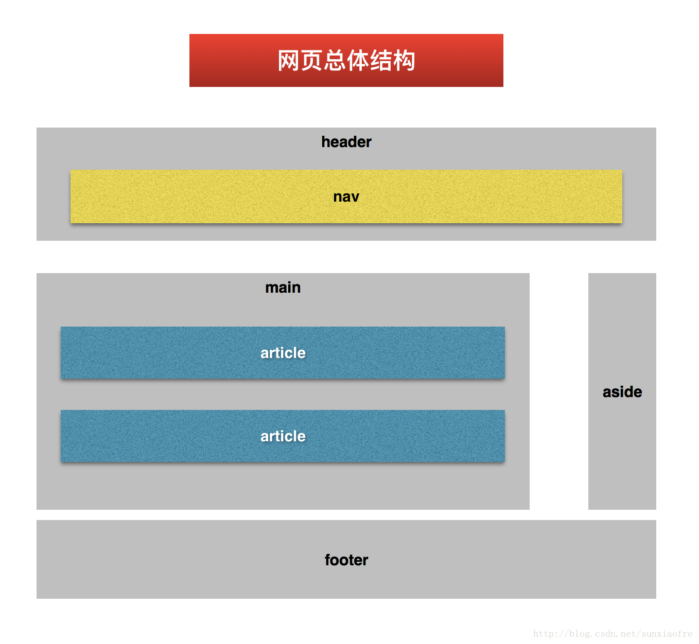

HTML是什么
- HyperText Markup Language
- 使用
标签来描述页面的内容和结构
HTML的产生
- 1989年,TimBerners-Lee
- 共享文档需要
- 还发明了浏览器、服务器和HTTP
Doctype的作用
- 指定HTML页面使用的标准和版本
- 浏览器根据doctype决定使用哪种渲染模式
渲染模式
- Quirks Mode 怪异模式 —-(
html4之前) - Almost Standard Mode 准标准模式—-(
有些标签大小写不严格) - Standard Mode 标准模式—(
标签大小写严格标准)
1 | <!-- html5 --> |
HTML 版本
- HTML 1.0,1991
- HTML 2.0,1994,IETE
- HTML 3.2, 1997,W3C
- Netscape引入私有标签
- HTML 3.0失败
- W3C接管HTML标准化
- HTML 4.01,1998
- 样式与内容分离,CSS支持
- Doctype
- XHTML 1.0,2000
- 用XML语法重新定义HTML
- 语法严格要求
- XHTML 2.0
- 不
兼容历史 - 去除样式类标签
- 去除img、a标签
- 彻底修改Form
- 开发者不欢迎,浏览器不支持
- 不
- HTML5
- 2004年,WHATWG继续发展HTML
- 2008年,W3C HTML5草案发布
HTML5 设计思想
- 兼容已有内容
- 避免不必要的复杂性
- 解决现实的问题
- 优雅降级
- 尊重事实标准
- 用户的需求–>开发者的需求–>浏览器厂商的需求–>标准的制定者的需求–>理论完美
HTML5 中的变化
- doctype、meta
- 新增语义化标签和属性
- 去掉纯展示性标签
- canvas、video、audio、离线、本地存储、拖拽等
HTML5语法
- 标签不区分大小写,推荐小些
- 空标签可以不闭合,如
<input> <meta> - 属性不必引号,推荐双引号
- 某些属性值可以省略,如required、readonly
文本标签
- p
- h1~h6
- hr 段落级别的话题切换（效果：一条横线）
列表：
- 有序列表
ol、li - 无序列表
ul、li 自定义列表
dl、dt、dd1
2
3
4
5
6
7
8
9
10
11<h3>霸王别姬</h3>
<dl>
<dt>导演：</dt>
<dd>陈凯歌</dd>
<dt>主演：</dt>
<dd>张国荣</dd>
<dd>巩俐</dd>
<dd>张丰毅</dd>
<dt>上映日期：</dt>
<dd>1993-01-01</dd>
</dl>列表是可以嵌套的（列表中有列表,自动默认有缩紧）。
- 有序列表
- 嵌套规则：内外不要混搭
引用
长段落引用块标签
1
<blockquote cite="myURL">长段落引用块标签</blockquote>
短引用
1
<cite>短引用说来源，如书名、标题</cite>
引用内容
1
<q>引用的内容，如引用一句话</q>
预格式化文本
pre保留空格和换行
- 代码段
code - 插图
figure- 可以包裹
图片或代码段1
2
3
4
5
6
7
8
9
10<figure>
<figcaption>定义一个函数</figcaption>
<pre>
<code>
function add(x,y){
return x+y
}
</code>
</pre>
</figure>
- 可以包裹
网页总体结构

html5 Doctor
- header 页头
- footer 页尾
- main 正文(网页想要表达的主要内容)
- aside 侧边栏(和正文内容无关)
- article 文章
- section 文档中的节，一段
1
2
3
4
5
6
7
8
9
10
11<article>
<header>
<h1>字体排版</h1>
<p>作者：XXX</p>
</header>
<section>
<h2>语言及范围</h2>
<p>在当代，。。。。。</p>
<p>字体排版。。。</p>
</section>
</article>
强调：
strong：重要性、严重性、紧急性em：从一句话中突出某个词语b：仅为了将词语从视觉上和其他部分区分，比如一篇论文摘要中的关键词。（不推荐）i：换一种语调去说一句话时，比如其他语言翻译，对话中的旁白。（不推荐）
定义与缩写：
1 | <dfn>定义</dfn> |
代码
1 | <code>代码段</code> |
上标和下标
1 | <sub></sub> |
mark
- 和用户当前行为相关的突出，比如在搜索结果中匹配到的词
- 一部分内容需要在后面引用时。
插入和删除
1 | <ins>更新</ins> |
换行控制（尽量避免）
1 | <br> |
div 和 span
- 实在找不到其他更符合语义的标签时使用
实体（Entity）字符
- & > ©¥☯
& >©¥☯